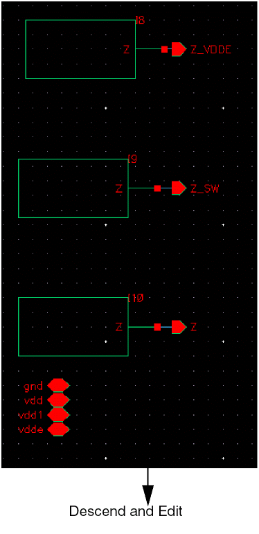
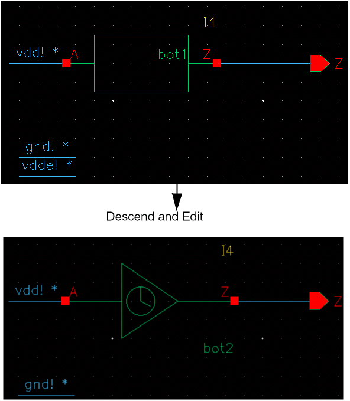
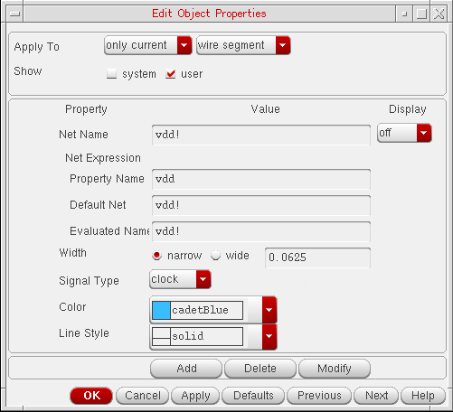
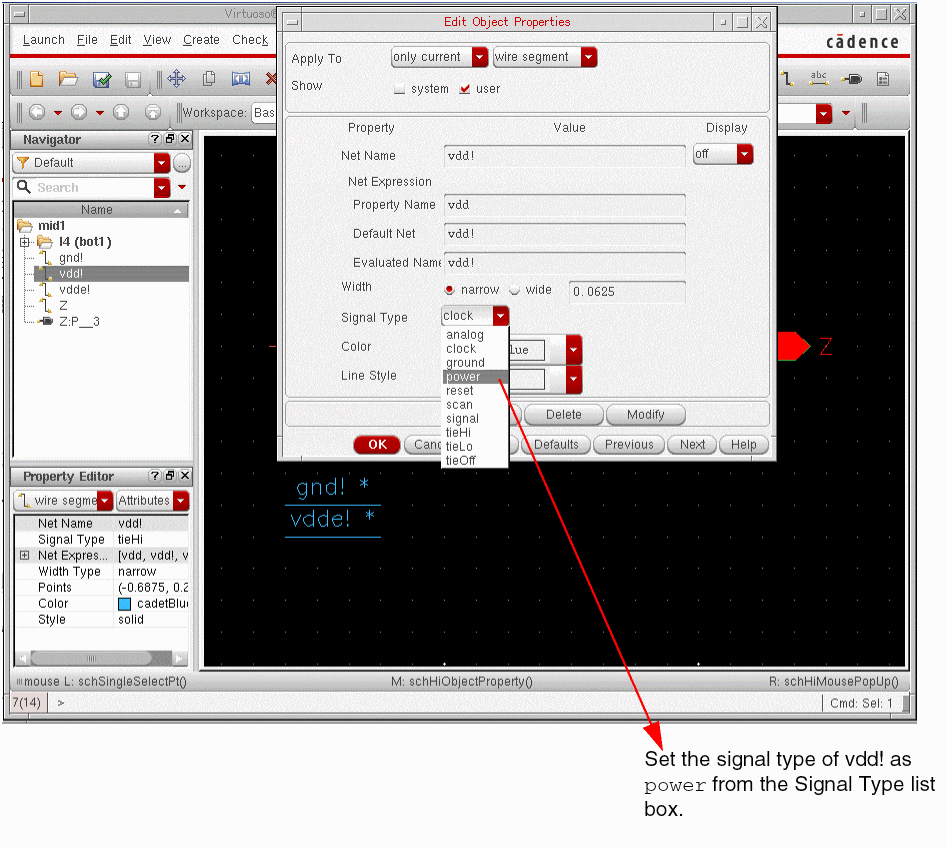

A
Customizing Your Environment
The information in this appendix describes how to:
- Customizing Command Form Option Settings
- Specifying an Editor for Text Files
- Generating Logical Verilog Netlists of Designs
Customizing Command Form Option Settings
There are two ways to customize command form option settings for the Virtuoso Verilog Environment for the NC-Verilog Integration window (main NC-Verilog window):
- Directly edit the default option settings on the command forms and save the session.
-
Create a
.simrcfile that contains the option settings you want to specify.
Directly Editing the Setup Command Forms
When you edit the default settings on a form, the system saves the new settings to the .vlogifrc file. The .vlogifrc file settings override the default setup options supplied with NC-Verilog Integration Environment or supplied by a user in an .simrc file.
The .vlogifrc file is rewritten whenever you complete one of the following actions:
- Exit the run directory
- Choose the File – Quit command from the NC-Verilog Integration window
- Change to a new run directory
Creating the .simrc File
You create a .simrc file with your system editor. Then you add a Cadence® SKILL variable and a custom value (or option setting) to the .simrc file.
Form Options and SKILL Variables
In general, you can customize some of the options for each of the following forms.
- SDF Delay Annotation Setup
- Netlist Setup
- Record Signals Setup
- Simulation Setup
- Simulation Comparison Setup
- Cross Selection Setup
The tables in the following section map the form options with the SKILL variables that you can specify in the .simrc file.
SDF Delay Annotation Setup Form
| Form Option | SKILL Variable |
|---|---|
Netlist Setup Form
| Form Option | SKILL Variable |
|---|---|
Simulation Options Form
| Form Option | SKILL Variable |
|---|---|
NC Sim Compare Options Form
| Form Option | SKILL Variable |
|---|---|
Record Signals Options Form
| Form Option | SKILL Variable |
|---|---|
Cross Selection Options Form
| Form Option | SKILL Variable |
|---|---|
In addition, there is another SKILL variable, simSupportDuplicatePorts, which determines whether to remove duplicate ports from a netlist. The variable is set to t, by default and the simulator accepts duplicate ports. If set to nil, the netlister removes duplicate ports from a netlist.
Specifying an Editor for Text Files
In the Virtuoso design environment, the default editor for text files in Virtuoso Text Editor. For details on this editor, see Virtuoso Text Editor User Guide.
You can also specify an editor of your choice in any of the following ways for working with text files, such as Verilog or Verilog-A files:
-
Set the SKILL variable
editorin Virtuoso CIW to specify the text editor as follows:
editor="s_editorCommand"
Here, s_editorCommand is the command for opening the required editor. For example, to specify vi as the editor, set this variable as follows:
editor="vi" -
Set the SKILL variable
hdlReadOnlyModeEditorCommandin CIW or in the.cdsinitfile to open a file in an external editor in read-only mode:
hdlReadOnlyModeEditorCommand="s_readOnlyCommand"
Here,s_readOnlyCommandis the command for opening files in the read-only mode in the required editor. For example, to open a file in nedit in the read-only mode, set this variable as follows:
hdlReadOnlyModeEditorCommand="nedit -read"
Generating Logical Verilog Netlists of Designs
This section includes the following topics:
- Overview
- Terminology
- Generating a Logical Verilog Netlist
- Comparison Between a Regular and a Logical Verilog Netlist
Overview
Consider a scenario where you want to run low-power simulations on a Verilog design that contains well-defined power connections along with inherited and explicit connections. For running these simulations, you would supply as input to the simulator, a netlist of the Verilog design. Moreover, the netlist for such a design would contain both connectivity and power information. However, if you are using a simulator such as Innovus™ Digital Implementation System (Innovus), you need to supply as input a netlist that contains only connectivity information, because this simulator obtains the power information from a separate source file. For such simulators, you can generate a logical Verilog netlist.
A logical Verilog netlist contains only connectivity information. It has the following properties:
-
Does not contain any inherited connection information, such as:
(* netExpr = "vdde(vdde_)" *) wire vdde_;
(* netExpr = "vdd(vdd_)" *) wire vdd_;
- Does not list any power and ground pins, and power and ground nets
-
Replaces the logical port connections to power and ground nets with
1’b1or1’b0
When generating a logical Verilog netlist, the netlister performs the following actions:
-
Power information, that is power or ground terminals and
instTerms, is removed. -
Ports with signal type other than
power,ground,tieHi, ortieLoand connected to a net with signal typeground, are replaced withtieLoor1'b0. -
Ports with signal type other than
power,ground,tieHi, ortieLoand connected to a net with signal typepower, are replaced withtieHior1'b1.
For information on the terms used to define a logical Verilog netlist, see “Terminology”.
To generate a logical Verilog netlist, set the SKILL variable simVerilogGenerateLogicalVerilog and netlist the design using NC-Verilog Environment.
If you do not want to explicitly specify the connections as scalar constants 1'b1 and 1'b0, you can declare the power and ground connections as supply1 and supply0 respectively in the logical Verilog netlist using the SKILL variable hnlVerilogLogicalWithSupplies. For example, the use of this variable is recommended in a design hierarchy with instances of primitive gates and their supply nets resolved with 1'b1 or 1'b0, which causes the elaboration process to fail. To elaborate the design successfully, set the variable to generate a logical Verilog netlist where the power and ground connections are declared as supply1 and supply0.
For details on how to generate these types of logical Verilog netlists of designs, see “Generating a Logical Verilog Netlist”.
The following box illustrates a logical Verilog netlist where the logical port connections to power and ground nets are replaced by the corresponding scalar constant through the use of simVerilogGenerateLogicalVerilog.
The following box illustrates a logical Verilog netlist where the supply nets are declared as supply1 or supply0 through the use of hnlVerilogLogicalWithSupplies and simVerilogGenerateLogicalVerilog.
Terminology
The table shown below describes the terms used to define a logical Verilog netlist. The definitions of these terms are based on the value of the signal type (sigType) attribute that you set for a net or terminal in your Verilog design. Virtuoso uses the value of sigType to extract power and ground nets, and the tieHi and tieLo connections from the design.
You can set sigType of a net or terminal in Virtuoso Schematic Editor or in Virtuoso Symbol Editor by using one of the following:
For information about the Signal Type list box, see “
Generating a Logical Verilog Netlist
To generate a logical Verilog netlist of a design where the logical port connections to power and ground nets are replaced with the corresponding scalar constant, set the SKILL variable simVerilogGenerateLogicalVerilog to t and identify the power and ground nets in the design. If you want to generate the logical Verilog netlist where the connections are declared as supply0 and supply1 appropriately, set the SKILL variable hnlVerilogLogicalWithSupplies to t, in addition to setting simVerilogGenerateLogicalVerilog. For details and examples of these types of logical Verilog netlists, see “Overview”.
You can identify the power and ground nets using one of the following methods:
You can then generate a logical netlist of the design from NC-Verilog Integration Environment.
Generating a Logical Verilog Netlist by Setting Variables
You can generate a logical Verilog netlist of a design by setting the applicable environment variables. This method eliminates the need to modify the design to indicate the power and ground nets. It lets you generate a logical netlist where cellview terminals identified through a variable are ignored in the logical netlist.
To generate a logical Verilog netlist of a design:
-
Set the
simVerilogGenerateLogicalVerilogvariable tot. If required, sethnlVerilogLogicalWithSuppliestot.
You can set the variables in.simrc,si.env, or Virtuoso CIW. -
Set the netlister to ignore the power and ground terminals in the design by specifying the
hnlVerilogIgnoreTermNameListvariable in.simrc,si.env, or Virtuoso CIW. To set this variable, specify the power and ground terminals to be ignored in the netlist in the following syntax:hnlVerilogIgnoreTermNameList=(list "
ignoreTermName1" "ignoreTermName2" ...) -
Set the netlister to identify the global power and ground nets in the design. For this, do one of the following tasks:
-
Set the simVerilogPwrNetList and simVerilogGndNetList variables in
.simrc,si.env, or Virtuoso CIW in the following syntax:simVerilogPwrNetList=(list "
powerNetName1" "powerNetName2" ... )simVerilogGndNetList=(list "
groundNetName1" "groundNetName2" ... ) - Perform the following steps to set the global power and ground nets from the graphical user interface:
- Launch the NC-Verilog Integration Environment for the design.
- Initialize the run directory.
- Set the global power and ground signals in the Global Power Nets and Global Ground Nets fields of the Netlist Setup form.
For details, see Chapter 3, “Setting Up the Simulation Environment.” -
Set the simVerilogPwrNetList and simVerilogGndNetList variables in
- Netlist the design using the NC-Verilog Integration Environment. For details, see “Netlisting a Design”.
Generating a Logical Verilog Netlist by Editing the Design
The following figure shows a Verilog design that uses terminals with inherited connections for power and ground supplies.
For the design shown in the example above, you can generate two versions of the Verilog netlist by using the main NC-Verilog window: a regular netlist and a logical netlist. This section describes the steps to generate a logical netlist. To generate a regular netlist, see the steps described in “Netlisting a Design”. A comparison of the two netlists, regular and logical, generated from this Verilog design is shown at the end of this section.
To generate a logical netlist from a Verilog design:
- Open your design in Virtuoso Schematic Editor.
-
Right-click in the schematic and choose Descend and Edit to descend into the design hierarchy.

Descend and edit to reach the nets for which you want to set the signal type attribute aspower.
 -
Select the nets for which you want to set the signal type attribute as
power. -
Choose Edit – Properties – Objects. The Edit Object Properties form appears.
 -
From the Signal Type list box, select
power.
 - Repeat steps 3 to 5 listed above for the following components:
-
Set the
simVerilogGenerateLogicalVerilogvariable tot. If required, sethnlVerilogLogicalWithSuppliestot.
You can set the variables in.simrc,si.env, or Virtuoso CIW. For details on these variables, see “Generating a Logical Verilog Netlist”. - Launch the NC-Verilog Integration Environment for the design. For this, choose Launch — Plugin — Simulation — NC-Verilog.
- Initialize the run directory.
-
Set the global power and ground signals in the Global Power Nets and Global Ground Nets fields of the Netlist Setup form.
For details, see Chapter 3, “Setting Up the Simulation Environment.” - Generate the netlist. For instructions, see “Netlisting a Design”.
You can now view the netlist to check if it is the required logical Verilog netlist. To view the netlist, choose Results – Netlist.
Comparison Between a Regular and a Logical Verilog Netlist
A regular and a logical Verilog netlist generated from the Verilog design illustrated in “Generating a Logical Verilog Netlist by Editing the Design” are given in the table below for comparison.
Notice the following in the logical netlist shown:
-
Power information, that is power or ground terminals and
instTerms, is removed. -
Ports with signal type other than
power,ground,tieHi, ortieLoand connected to a net with signal typeground, are replaced withtieLoor1'b0. -
Ports with signal type other than
power,ground,tieHi, ortieLoand connected to a net with signal typepower, are replaced withtieHior1'b1.
Return to top